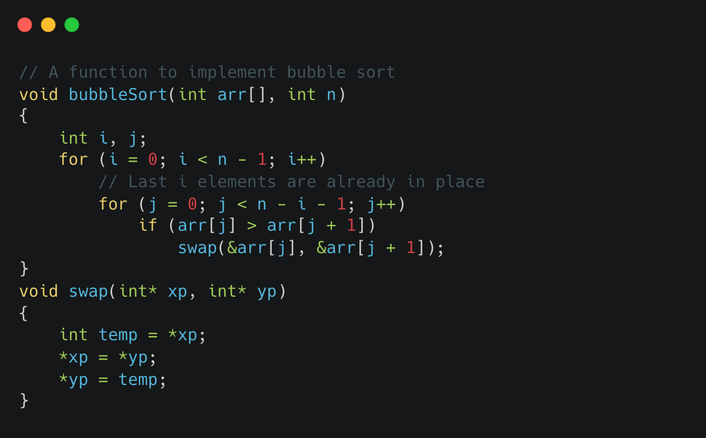

Bubble sort is a simple sorting algorithm that repeatedly steps through a list of elements, compares adjacent elements, and swaps them if they are in the wrong order. The pass through the list is repeated until the list is sorted.
The algorithm works by repeatedly comparing adjacent elements of the list and swapping them if they are in the wrong order. The largest element "bubbles" to the end of the list in each pass, until the list is sorted.
Code in C:
The outer loop iterates over the entire array, and the inner loop iterates over the unsorted portion of the array (the portion of the array that has not yet been sorted).
In each pass through the inner loop, the algorithm compares the current element with the next element in the list. If the current element is greater than the next element, the two elements are swapped.
This process is repeated for all the elements in the list, and in each pass, the largest element "bubbles" to the end of the list.
The time complexity of bubble sort is O(n^2) in the worst and average case and it takes O(n) in the best case scenario when the list is already sorted.
Bubble sort is not an efficient algorithm for large data sets, but it can be useful for small data sets or for educational purposes to understand the concept of sorting.